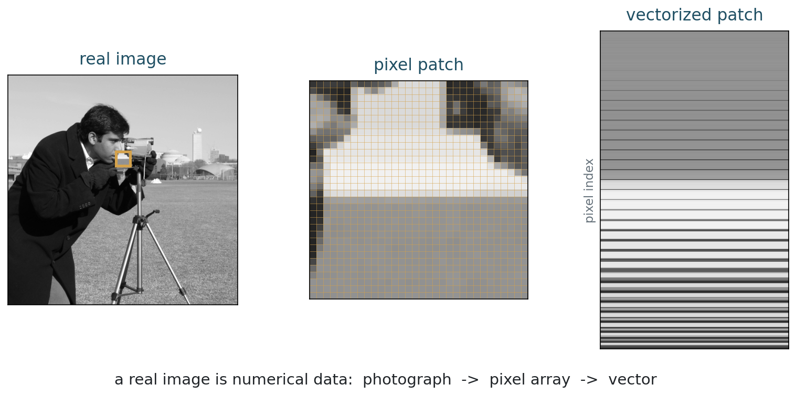
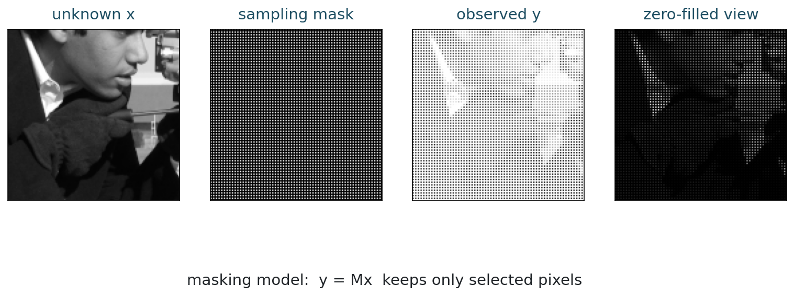

MATH 435: Mathematical Imaging - Week 1
2001-01-01
Mathematical imaging begins here
If a scanner gives us imperfect data, what exactly are we trying to recover?
| Time | Work |
|---|---|
| 0-10 min | motivation and course pattern |
| 10-30 min | image models, pixels, vectorization |
| 30-45 min | hand activity and NumPy representation |
| 45-60 min | forward model and inverse problem |
| 60-72 min | masking example with a real image |
| 72-75 min | exit checkpoint |
Most of the course studies the middle two arrows: how data are produced, and how reconstruction stabilizes the inverse problem.
Continuous model
At the mathematical level, a grayscale image is often modeled as a function
u : \Omega \subset \mathbb{R}^2 \to \mathbb{R}.
The value u(x,y) is the intensity at location (x,y).
For color images, the value at each point has several components:
u : \Omega \to \mathbb{R}^3.
Each location stores red, green, and blue intensities.
Question
What changes mathematically when a medical image has many channels, time frames, or slices?
Digital images are sampled on a grid:
u_{i,j} \approx u(x_i, y_j).
For an image with m rows and n columns:
U = \begin{bmatrix} u_{1,1} & u_{1,2} & \cdots & u_{1,n} \\ u_{2,1} & u_{2,2} & \cdots & u_{2,n} \\ \vdots & \vdots & \ddots & \vdots \\ u_{m,1} & u_{m,2} & \cdots & u_{m,n} \end{bmatrix}.
8 minutes
Given
U = \begin{bmatrix} 10 & 20 & 30 & 40 \\ 50 & 60 & 70 & 80 \\ 90 & 100 & 110 & 120 \end{bmatrix},
write \operatorname{vec}(U) using row-major order.
Row-major order reads rows from left to right:
\operatorname{vec}(U) = \begin{bmatrix} 10 & 20 & 30 & 40 & 50 & 60 & 70 & 80 & 90 & 100 & 110 & 120 \end{bmatrix}^{T}.
How would the vector change under column-major order?

Real sample image from skimage.data.camera(). The mathematical object is not the displayed photograph alone; it is the numerical array behind it.
Visualization
For display, a grayscale image is naturally a matrix:
U \in \mathbb{R}^{m \times n}.
Computation
For linear algebra, reshape the image as
x = \operatorname{vec}(U) \in \mathbb{R}^{mn}.
Once U is written as a vector x, we can use matrices to represent many controlled imaging operations:
x \mapsto Ax.
Examples:
This is a modeling choice, not a claim that all image formation is linear.
The same image can be an array for display and a vector for linear algebra.
NumPy uses row-major order by default:
When translating formulas into code, always state your vectorization convention.
For an image U \in \mathbb{R}^{m \times n}, a pixel has two indices:
U_{i,j}.
After vectorization, the same pixel has one index:
x_k.
For row-major order, k = (i-1)n + j.
2 minutes
For a 4 \times 5 image, where does pixel (i,j) = (3,2) appear in row-major vectorization?
k = (i-1)n + j
The central equation
From image formation to inverse problems
First forward model
y = A x + \eta.
This linear model is the first mathematical language of the course. We will also need nonlinear and information-losing models.
| Operator | Imaging meaning | Typical difficulty |
|---|---|---|
| I | direct observation | noise |
| fixed masking | selected pixels are recorded | incomplete data |
| convolution | blur | lost high frequencies |
| Fourier sampling | MRI-style acquisition | indirect measurements |
| projection | tomography | incomplete angles |
Linear model
If the measurement rule is fixed in advance, then many operators are linear:
x \mapsto Ax.
But real scenes
Visibility, occlusion, saturation, shadows, reflection, and segmentation can make the image formation process nonlinear or irreversible.
Forward problem
Given x, predict the measured data:
y = Ax + \eta.
Usually stable.
Inverse problem
Given y, estimate the unknown image:
\hat{x} \approx x.
Often unstable.
Fixed mask
If we decide in advance which pixels to keep, then
y = Mx
is linear.
Occlusion
If a tree hides a person, the visible image depends on scene geometry, depth, and visibility.
The hidden person is not encoded in the pixels.
Some inverse problems are unstable but still contain indirect information.
Other situations are simply not observed. If an object is completely occluded, no algorithm can recover its true appearance from that image alone without outside information.
Audio
Sound waves approximately superpose:
y(t) \approx s_1(t) + s_2(t) + \cdots.
Separation is still hard, but the mixture can contain all sources.
Images
Visibility is different: the camera records the visible surface.
If a surface is hidden, its appearance is absent from that image.
The naive answer would be:
x = A^{-1}y.
What could go wrong with this answer?
The naive answer would be:
x = A^{-1}y.
But this can fail because:
Suppose a fixed set of pixels is measured.
The mask is fixed independently of the unknown image.
y = Mx
Here M selects rows from the identity matrix.
If M has fewer rows than columns, can there be a unique inverse?
Let
x = \begin{bmatrix} x_1 \\ x_2 \\ x_3 \\ x_4 \\ x_5 \end{bmatrix}
and suppose we observe only entries 1, 3, and 5:
y = \begin{bmatrix} x_1 \\ x_3 \\ x_5 \end{bmatrix} = \begin{bmatrix} 1 & 0 & 0 & 0 & 0 \\ 0 & 0 & 1 & 0 & 0 \\ 0 & 0 & 0 & 0 & 1 \end{bmatrix} x.
The matrix M has shape 3 \times 5.
It cannot have an inverse that recovers all five unknowns from three measurements.
Class question
Can you describe two different vectors x that produce the same y?

This is a fixed sampling mask. It is not the same as physical occlusion by an object in the scene.
Think, then discuss
Suppose an operator keeps only every other pixel.
The missing pixels are not hidden somewhere in y.
To choose one reconstruction among many possible images, we need a principle:
\text{data fit} + \text{prior knowledge}.
Reconstruction needs information not present in the data alone.
Common priors in this course:
A practical checklist
Ask these questions for every problem.
The data are a blurred and noisy image:
y = h * x + \eta.
The operator A is convolution by the point spread function h.
Preview
Next week, we will make this precise and compute it.
Exit ticket
For each situation, identify x, y, A, and one reasonable prior:
| Situation | A | Possible prior |
|---|---|---|
| blurred photo | convolution | sharp edges, natural-image smoothness |
| few-angle CT | projection operator | piecewise smooth anatomy |
| missing regions | fixed masking, if mask is known | texture or geometric continuation |
| object hidden by a tree | nonlinear visibility/occlusion | cannot recover true appearance from one image alone |
Convolution and blur:
MATH 435: Mathematical Imaging